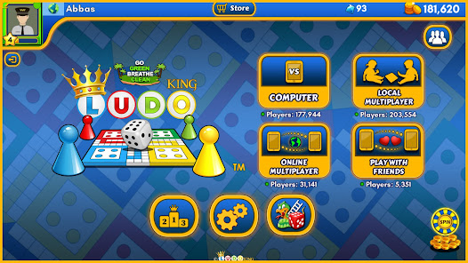
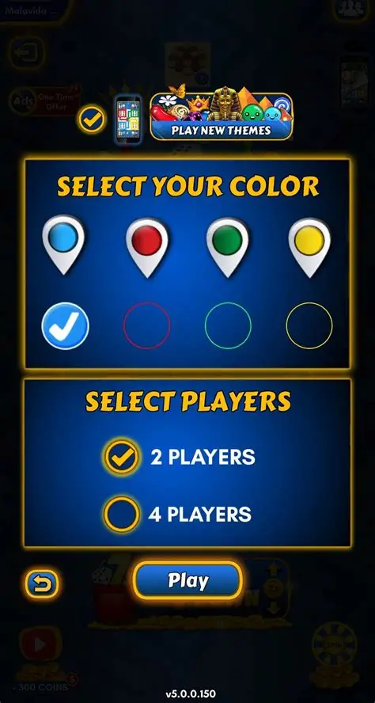

Ludo King is one of the most popular online board games in the world. It is based on the traditional Ludo board game and can be played by people of all ages. The game includes multiplayer features, online gameplay and different themes that make the experience fun and entertaining.The game is a modern version of the traditional board game Ludo, which itself is based on the ancient Indian game Pachisi Ludo King has become the first Indian gaming app to cross 1 billion downloads, with availability in 15 languages and popularity in over 30 countries.


Play NowLudo King includes many exciting features such as online multiplayer mode, private rooms, voice chat and different board themes. These features make the game enjoyable for both casual and competitive players.This website was created to provide information about Ludo King and its features. The website includes gameplay information, community discussions and contact details for users who want to learn more about the game. The aim of the website is to create a fun and friendly space for Ludo King fans
Many players love Ludo King because it is fun, simple and enjoyable for people of all ages. The game allows friends and family members to play together online or offline, making it a great way to spend time together. Players also enjoy the colourful design, exciting gameplay and competitive challenges. The multiplayer mode makes the game more interactive and gives players the chance to compete with people from different parts of the world.
The goal of this website is to create a fun and friendly platform for Ludo King fans and players. The website provides information about the game, gameplay tips and community content in one place. It is designed to be easy to use, visually attractive and enjoyable for users who want to learn more about Ludo King.